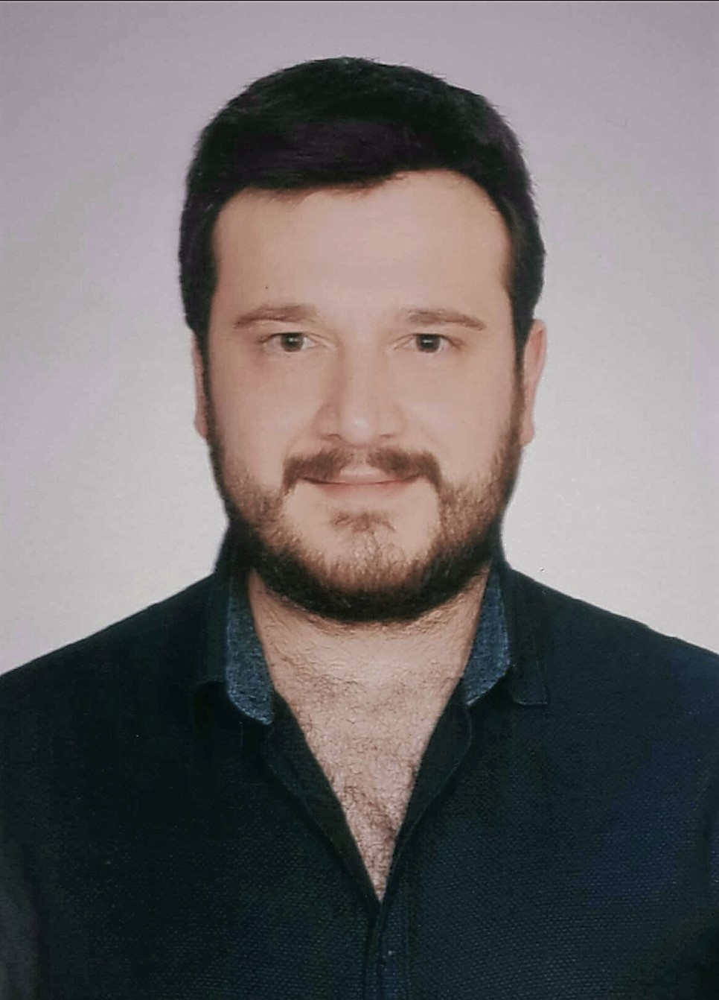
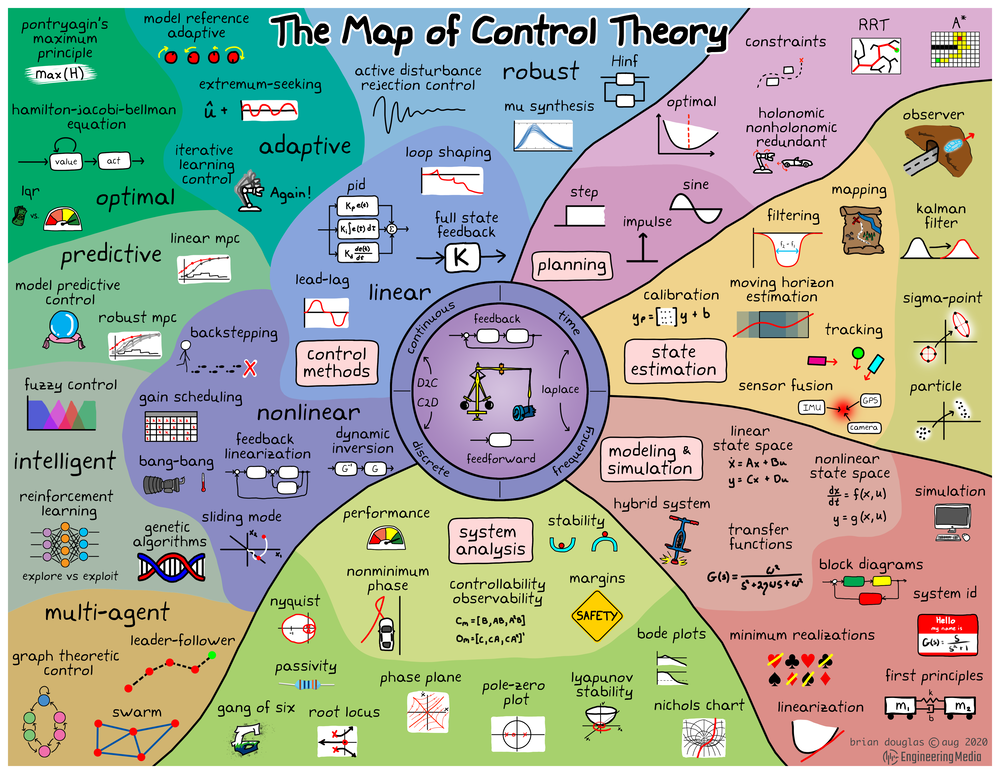

Dr. Burak KÜRKÇÜ
|
 |
Visiting Professor,
Mechanical System Control Laboratory
UC Berkeley
bkurkcu[at]berkeley[dot]edu
Assistant Professor,
Department of Computer Engineering
Hacettepe University
bkurkcu[at]cs[dot]hacettepe[dot]edu[dot]tr
|
I am a Visiting Professor in the MSC Laboratory at UC Berkeley. Jointly, I am also an assistant professor in the Department of Computer Engineering at Hacettepe University . Before joining the department, I had been working as a control system design engineer at ASELSAN Inc. for 10 years. I received my Ph.D. and M.Sc. degrees from the Department of Electrical and Electronics Engineering at TOBB University of Economics and Technology in 2019 and 2015 respectively. I received my B.Sc degree from the Istanbul Technical University in 2010.
Research Interests
I aim to establish a unified theory , primarily from an algebraic viewpoint. Additionally, in the lens of AI/ML, I focus on fostering collaboration to address fundamental questions related to quantifying uncertainties and determining optimal data requirements for a deeper understanding of physical phenomena. My overarching goal is to tackle the ongoing theoretical challenge of feasibility and applicability.
Robust Control, Switched NN & Simultaneous Learning, Robotics, Autonomous Systems
Academic Services
Associate Editor - Transactions of the Institute of Measurement and Control (TIMC) - Impact Factor: 2.146
Associate Editor - Measurement and Control (JMAC) - Impact Factor: 1.648
Associate Editor - Turkish Journal of Electrical Engineering and Computer Science (TJEECS) - Impact Factor: 1.1
Awards
TUBITAK BIDEP - Research Fellowship- 2022
IEEE PhD Thesis Award - 2020
Best Paper Award - National Mechanics Congress'09
Full Scholarship for graduate studies (MSc + PhD) from TOBB ETU
Certificate of excellence by ASELSAN Inc. - 2016
Updates and News
01 May 2024: We have 2 journal papers and 1 conference paper from our group accepted.
- Yang, W., Kurkcu, B., Tomizuka, M., "Approximated Modeling and Optimal Design for a
Soft Pneumatic Actuator Considering the Force/Torque and System Controllability" ASME
JMD, 2024.
- Efe, M. O., Kurkcu, B., Kasnakoglu, C., Zaharuddin, M., Zhijie, L.,"Masked Multiple State
Space Model Identifcation Using FRD and Evolutionary Optimization" IEEE Trans. on
Ind. Informatics, 2024. Link to the paper.
- Yang, W., Stuart, H., Kurkcu, B., and Tomizuka, M. “Nonlinear Parameter-Varying Modeling
for Soft Pneumatic Actuators and Data-Driven Parameter
Estimation ” IEEE/ASME AIM, 2024
10 Mar 2024: We have a new paper from our group accepted to IEEE/IFAC 8th International Conference on Control Automation and Diagnosis (ICCAD'24)
- Gün, M., Kürkçü, B., and Kaya, A., "Extending Virtual Force Field for Obstacle Avoidance via Polynomial Extrapolation"
14 Feb 2024:I gave a talk on robust control for soft robots at the University of Sheffield - ASCE's Research Seminar.
11 Feb 2024: We have a new paper accepted to IEEE Transactions on Emerging Topics in Computational Intelligence
- M. Ö. Efe, B. Kürkçü, C. Kasnakoǧlu, Z. Mohamed and Z. Liu, "Switched Neural Networks for Simultaneous Learning of Multiple Functions" in IEEE Transactions on Emerging Topics in Computational Intelligencelink to the paper
10 Feb 2024:I gave a talk on Robust Robotics at the Colorado School of Mines Space Resources Program.
29 Nov 2023: We have a new paper accepted to IEEE Transactions on Circuits and Systems II
- M. Ö. Efe, B. Kürkçü, C. Kasnakoǧlu, Z. Mohamed and Z. Liu, "A Modified Levenberg Marquardt Algorithm for Simultaneous Learning of Multiple Datasets," in IEEE Transactions on Circuits and Systems II: Express Briefs, doi: 10.1109/TCSII.2023.3335140. Link to the paper
10 Oct 2023: We have 2 papers from our group at UC Berkeley accepted to IEEE ROBIO.
- Yang, W.T., Kürkçü, B., Hirao, M., Sun, L., Zhu, X., Zhang, Z., Gu, G., X., Tomizuka, M., "Control of Soft Pneumatic Actuators with Approximated Dynamical Modeling". Link to the paper.
- Hirao, M., Kürkçü, B., Ghanbarpour, A., Tomizuka, M., "Frequency Domain Analysis of Nonlinear Series Elastic Actuator via Describing Function". Link to the paper.
5 Sep 2023: We have a new paper from our group accepted to 13th EASN International Conference.
- Demirli. A, and Koç. İ., M., Kürkçü. B., "L1 adaptive controller design for a tail fin controlled fixed wing unmanned aerial vehicle" linkto the paper
23 Aug 2023:Glad to inform you that I have joined the editorial board of Turkish Journal of Electrical Engineering and Computer Science as a new Guest Editor. Look forward to see your outstanding manuscripts.
15 May 2023: We have a new paper from our group accepted to IEEE CCTA.
- Özçelik. M, Kürkçü. B, and Bayraktaroğlu. Z., Y., "Experimental Comparison of H-Infinity Synthesis and Feedback Linearization on a MIMO Gimbal Example" link to the paper
14 Feb 2023:Glad to inform you that I have joined the editorial board of Transactions of the Institute of Measurement and Control (TIMC) (SCI-Q3) as a new Associate Editor. Look forward to see your outstanding manuscripts.
23 Jan 2023:Glad to inform you that I have joined the editorial board of Measurement and Control (SCI-Q3) as a new Associate Editor. Look forward to see your outstanding manuscripts.
15 Jan 2023:I joined the Prof. Masayoshi Tomizuka's Systems Control Group at UC Berkeley as a Research Scholar.
09 Jan 2023: Happy to share that our paper "Modelling and Simulation of 2 DOF Gimbal System with Experimental System Identification" is publised on the IEEE 10th International Conference on Systems and Control (ICSC). Link to the paper.
13 Oct 2022: Happy to share that our paper "A New Adaptive Disturbance/Uncertainty Estimator Based Control Scheme For LTI Systems" is publised in IEEE Access (SCI-Q1- IF:3.476) . Link to the paper.
15 Sep 2022:We have a paper from our group accepted to TOK 2022, Elazığ.
- Kaplan, M., R., Kurkcu, B., ve Bayraktaroglu, Z, Y. "Bozucu Gözleyici Yaklaşımların İncelenmesi: Bir Gimbal Örneği"" TOK Automatic Control National Committee Meeting,
Elazıg,Turkey, 2022 Link to the paper.
17 Aug 2022: I will be teaching BBM 231 - Logic Design and BBM 341 - Systems Programming
08 Aug 2022: Welcome Mehmet Kerem!
06 May 2022: We have 2 papers from our group accepted to IEEE ICMIMT.
- Albayrak. M, Kürkçü. B, and Ayasun. S, "Switching Based MIMO Robust Autopilot Design: A Munition Example"
- Eser. A. Ö, Kürkçü. B, and Ayasun. S, "Adaptive Notch Filter Design for Flexible Modes of Guided Munitions"
04 May 2022: Happy to share that our paper "On the existence of Equivalent-Input-Disturbance and multiple integral augmentation via H-Infinity Synthesis for unmatched systems" was accepted to ISA Transactions (SCI-Q1- IF:5.468) . Link to the paper. Joint work with Cosku Kasnakoglu from ETU, Mehmet Önder Efe from Hacettepe and Rong Su from NTU Singapore.
01 Feb 2022: I will be teaching BBM 407 - Fuzzy Logic and CMP 756 - Swarm Systems
12 Nov 2021: Happy to share that I am now the Principal Investigator of the newly signed project entitled "Design of a robust motion control system for the satellite antenna system." with a Defense Industry Company.
05 Aug 2021: I will be teaching BBM 205 - Introduction to Discrete Mathematics and BBM 231 - Logic Design this semester
07 June 2021: Happy to share that I am now the Principal Investigator of the newly signed project entitled "Switched Robust Control based Autopilot Design for the underactuated systems" with a Defense Industry Company.
20 May 2021: Glad to inform you that I have joined the editorial board of International Journal of
Robotics and Control Systems as a new Associate Editor.
22 March 2021: Started at Hacettepe University!
Contact
email: bkurkcu[at]cs[dot]hacettepe[dot]edu[dot]tr
phone: +90(312)297 7500(160)
office: Computer Engineering Building - Z08
|
 |
The Map of the Control Theory.
(click on the image to enlarge)
Original image: Brian Douglas
|
|
{kind=link}